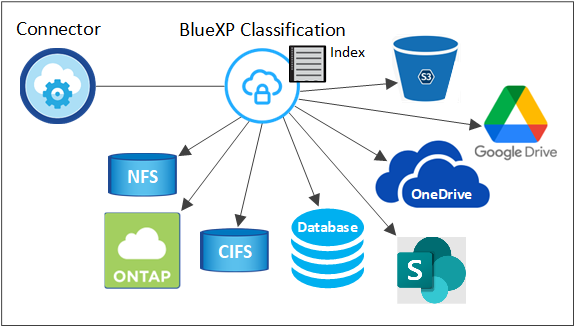

发行说明
发行说明
了解BlueXP分类
 建议更改
建议更改
BlueXP分类是BlueXP的一项数据监管服务、用于扫描企业内部和云数据源、以便对数据进行映射和分类、并确定私有信息。这有助于降低安全性和合规性风险，降低存储成本，并有助于您的数据迁移项目。
功能
BlueXP分类使用人工智能(AI)、自然语言处理(NLL)和机器学习(ML)来了解它扫描的内容、以便提取实体并对内容进行相应的分类。这样、BlueXP分类就可以提供以下功能区域。
保持合规性
BlueXP分类提供了多种可帮助您实现合规性的工具。您可以使用BlueXP分类来：
-
识别个人身份信息（ PiII ）。
-
根据GDPR、CCPA、PCI和HIPAA隐私法规的要求、识别广泛的敏感个人信息。
-
根据名称或电子邮件地址响应数据主体访问请求(Data Subject Access Requests、DSAar)。
-
确定是否在其他存储库的文件中找到了数据库中的唯一标识符-基本上是创建您自己的"个人数据"列表、该列表在BlueXP分类扫描中标识。
-
当文件包含特定的PiE时、通过电子邮件通知特定用户(您可以使用定义此条件) "策略")、这样您就可以决定行动计划。
增强安全性
BlueXP分类可以识别可能存在被用于犯罪目的访问风险的数据。您可以使用BlueXP分类来：
-
确定具有打开权限的所有文件和目录(共享和文件夹)、这些文件和目录会公开给您的整个组织或公有。
-
确定位于初始专用位置以外的敏感数据。
-
遵守数据保留策略。
-
使用_policies_自动向安全人员通知新的安全问题、以便他们可以立即采取措施。
-
向文件添加自定义标记(例如"需要移动")、并分配一个BlueXP用户、以便此用户可以拥有文件的更新。
-
查看和修改 "Azure 信息保护（ AIP ）标签" 在文件中。
优化存储使用
BlueXP分类提供了有助于降低存储总拥有成本(TCO)的工具。您可以使用BlueXP分类来：
-
通过识别重复数据或非业务相关数据来提高存储效率。您可以使用此信息来确定是要移动还是删除某些文件。
-
删除看似不安全或风险太大、无法留在存储系统中的文件、或者您已确定为重复的文件。您可以使用_policies_自动删除符合特定条件的文件。
-
通过确定可以分层到成本较低的对象存储的非活动数据、节省存储成本。 "了解有关从Cloud Volumes ONTAP 系统分层的更多信息"。 "了解有关从内部ONTAP 系统分层的更多信息"。
加快数据迁移速度
BlueXP分类可用于在将内部数据迁移到公共云或私有云之前对其进行扫描。您可以使用BlueXP分类来：
-
在移动数据之前，查看数据的大小以及任何数据是否包含敏感信息。
-
筛选源数据(基于超过25种标准类型)、以便只能将所需文件移动到目标-不会移动不必要的数据。
-
仅自动持续地将所需数据移动、复制或同步到云存储库中。
支持的数据源
BlueXP分类可以扫描和分析来自以下类型数据源的结构化和非结构化数据：
-
NetApp：*
-
Cloud Volumes ONTAP （部署在 AWS ， Azure 或 GCP 中）
-
内部 ONTAP 集群
-
StorageGRID
-
Azure NetApp Files
-
适用于 ONTAP 的 Amazon FSX
-
适用于 Google Cloud 的 Cloud Volumes Service
非NetApp：
-
Dell EMC Isilon
-
纯存储
-
Nutanix
-
任何其他存储供应商
云：
-
Amazon S3
-
Google Cloud 存储
-
OneDrive
-
SharePoint Online
-
SharePoint内部部署(SharePoint Server)
-
Google Drive
数据库：
-
Amazon Relational Database Service （ Amazon RDS ）
-
MongoDB
-
MySQL
-
Oracle
-
PostgreSQL
-
SAP HANA
-
SQL Server （ MSSQL ）
BlueXP分类支持NFS 3.x、4.0和4.1以及CIFS 1.x、2.0、2.1和3.0。
成本
-
使用BlueXP分类的成本取决于要扫描的数据量。BlueXP分类在BlueXP工作空间中扫描的前1 TB数据可免费使用30天。这包括所有工作环境和数据源中的所有数据。要在这之后继续扫描数据，需要订阅 AWS ， Azure 或 GCP Marketplace 或 NetApp 提供的 BYOL 许可证。请参见 "定价" 了解详细信息。
-
在云中安装BlueXP分类需要部署云实例、这会导致从部署该实例的云提供商处收取费用。请参见 为每个云提供商部署的实例类型。如果您在内部系统上安装BlueXP分类、则不需要任何费用。
-
BlueXP分类要求您已部署BlueXP Connector。在许多情况下、由于您在BlueXP中使用的其他存储和服务、您已经有了一个Connector。Connector 实例会从部署该实例的云提供商处收取费用。请参见 "为每个云提供商部署的实例类型"。如果在内部部署系统上安装 Connector ，则不需要任何成本。
数据传输成本
数据传输成本取决于您的设置。如果BlueXP分类实例和数据源位于同一可用性区域和区域、则不会产生数据传输成本。但是，如果数据源（例如 Cloud Volumes ONTAP 系统或 S3 存储分段）位于 Different 可用性区域或区域，则云提供商会向您收取数据传输成本。有关详细信息，请参见以下链接：
BlueXP分类实例
在云中部署BlueXP分类时、BlueXP会将实例部署在与连接器相同的子网中。 "了解有关连接器的更多信息。"

请注意以下有关默认实例的信息：
-
在AWS中、BlueXP分类在上运行 "m6i.4xlarge实例" 使用500 GiB GP2磁盘。操作系统映像为 Amazon Linux 2 。在AWS中部署时、如果您要扫描少量数据、则可以选择较小的实例大小。
-
在Azure中、BlueXP分类在上运行 "标准的 D16s_v3 VM" 使用500 GiB磁盘。操作系统映像为 CentOS 7.9 。
-
在GCP中、BlueXP分类在上运行 "n2-standard-16 虚拟机" 使用500 GiB标准持久性磁盘。操作系统映像为 CentOS 7.9 。
-
在默认实例不可用的区域中、BlueXP分类在备用实例上运行。 "请参见备用实例类型"。
-
此实例名为 CloudCompliance ，并与生成的哈希（ UUID ）串联在一起。例如： CloudCompliance" — 16bb6564-38AD-4080-9a92 — 36f5fd2f71c7
-
每个连接器仅部署一个BlueXP分类实例。
您还可以在内部的Linux主机上或首选云提供商的主机上部署BlueXP分类。无论您选择哪种安装方法，软件的工作方式都完全相同。只要该实例可以访问Internet、BlueXP分类软件的升级就会自动进行。

|
实例应始终保持运行状态、因为BlueXP分类会持续扫描数据。 |
使用较小的实例类型
您可以在CPU较少、RAM较少的系统上部署BlueXP分类、但在使用这些功能较弱的系统时存在一些限制。
| 系统大小 | 规格 | 限制 |
|---|---|---|
超大 |
32个CPU、128 GB RAM、1 TiB SSD |
最多可扫描5亿个文件。 |
大型(默认) |
16个CPU、64 GB RAM、500 GiB SSD |
最多可扫描2.5亿个文件。 |
中等 |
8个CPU、32 GB RAM、200 GiB SSD |
扫描速度较慢，最多只能扫描 100 万个文件。 |
小型 |
8个CPU、16 GB RAM、100 GiB SSD |
限制与 " 中等 " 相同，并且还可以识别 "数据主题名称" 已禁用内部文件。 |
在AWS上的云中部署BlueXP分类时、您可以选择大型/中型/小型实例。在Azure或GCP中部署BlueXP分类时、如果要使用这些备用系统之一、请发送电子邮件至ng-contact-data-sense@netapp.com以获得帮助。我们需要与您合作来部署这些其他云配置。
在内部部署BlueXP分类时、只需使用具有备用规格的Linux主机即可。您无需联系 NetApp 以获得帮助。
BlueXP分类的工作原理
从较高层面来看、BlueXP分类的工作原理如下：
-
您可以在BlueXP中部署BlueXP分类实例。
-
您可以对一个或多个数据源启用高级别映射或深度扫描。
-
BlueXP分类使用AI学习流程扫描数据。
-
您可以使用提供的信息板和报告工具帮助您开展合规和监管工作。
扫描的工作原理
启用BlueXP分类并选择要扫描的存储库(即卷、存储分段、数据库架构或OneDrive或SharePoint用户数据)后、它会立即开始扫描数据以确定个人数据和敏感数据。在大多数情况下、您应重点扫描实时生产数据、而不是备份、镜像或灾难恢复站点。然后、BlueXP分类会映射您的组织数据、对每个文件进行分类、并在数据中标识和提取实体和预定义模式。扫描的结果是个人信息，敏感个人信息，数据类别和文件类型的索引。
BlueXP分类可通过挂载NFS和CIFS卷与任何其他客户端一样连接到数据。NFS 卷会自动以只读方式访问，而您需要提供 Active Directory 凭据来扫描 CIFS 卷。

完成初始扫描后、BlueXP分类会以轮循方式持续扫描数据、以检测增量更改(这就是保持实例运行至关重要的原因)。
您可以在卷级别，存储分段级别，数据库架构级别， OneDrive 用户级别和 SharePoint 站点级别启用和禁用扫描。
映射扫描与分类扫描之间的区别是什么
通过BlueXP分类、您可以对选定数据源运行常规"映射"扫描。映射仅提供数据的概览，而 " 分类 " 则提供数据的深度扫描。由于无法访问文件以查看数据源中的数据，因此可以非常快速地对数据源进行映射。
许多用户喜欢此功能、因为他们希望快速扫描其数据以确定需要更多研究的数据源、然后只能对所需的数据源或卷启用分类扫描。
下表显示了一些差异：
| 功能 | 分类 | 映射 |
|---|---|---|
扫描速度 |
速度较慢 |
快速 |
文件类型和已用容量的列表 |
是的。 |
是的。 |
文件数和已用容量 |
是的。 |
是的。 |
文件的期限和大小 |
是的。 |
是的。 |
能够运行 "数据映射报告" |
是的。 |
是的。 |
数据调查页面以查看文件详细信息 |
是的。 |
否 |
搜索文件中的名称 |
是的。 |
否 |
创建 "策略" 可提供自定义搜索结果 |
是的。 |
否 |
使用 AIP 标签和状态标记对数据进行分类 |
是的。 |
否 |
复制，删除和移动源文件 |
是的。 |
否 |
能够运行其他报告 |
是的。 |
否 |
BlueXP分类扫描数据的速度
扫描速度受网络延迟、磁盘延迟、网络带宽、环境大小和文件分发大小的影响。
-
在执行映射扫描时、BlueXP分类功能每天可以为每个扫描程序节点扫描100-150 Tib的数据。
-
执行分类扫描时、BlueXP分类可以每天扫描每个扫描程序节点15到40 Tib的数据。
BlueXP分类索引的信息
BlueXP分类可收集数据(文件)、编制索引并为其分配类别。BlueXP分类索引的数据包括以下内容：
- 标准元数据
-
BlueXP分类可收集有关文件的标准元数据：文件类型、大小、创建和修改日期等。
- 个人数据
-
个人身份信息，例如电子邮件地址，标识号或信用卡号。 "了解有关个人数据的更多信息"。
- 敏感的个人数据
-
GDPR 和其他隐私法规定义的特殊类型的敏感信息，例如健康数据，种族或政治观点。 "了解有关敏感个人数据的更多信息"。
- 类别
-
BlueXP分类采用它扫描的数据、并将其划分为不同类型的类别。类别是基于 AI 对每个文件的内容和元数据的分析而得出的主题。 "了解有关类别的更多信息"。
- 类型
-
BlueXP分类会采用它扫描的数据、并按文件类型将其细分。 "了解有关类型的更多信息"。
- 名称实体识别
-
BlueXP分类使用AI从文档中提取自然人姓名。 "了解如何响应数据主体访问请求"。
网络概述
BlueXP部署BlueXP分类实例、其中包含一个安全组、用于从连接器实例建立入站HTTP连接。
在SaaS模式下使用BlueXP时、与BlueXP的连接通过HTTPS提供、浏览器和BlueXP分类实例之间发送的私有数据通过使用TLS 1.2的端到端加密进行保护、这意味着NetApp和第三方无法读取。
出站规则完全开放。要安装和升级BlueXP分类软件以及发送使用情况指标、需要访问Internet。
如果您有严格的网络连接要求， "了解BlueXP分类所联系的端点"。
用户访问合规性信息
为每个用户分配的角色在BlueXP和BlueXP分类中提供不同的功能：
-
* 帐户管理员 * 可以管理所有工作环境的合规性设置并查看合规性信息。
-
只有当系统具有访问权限时， * 工作空间管理员 * 才能管理合规性设置并查看合规性信息。如果工作区管理员无法访问BlueXP中的工作环境、则他们无法在BlueXP分类选项卡中查看该工作环境的任何合规性信息。
-
具有 * 合规性查看器 * 角色的用户只能查看其有权访问的系统的合规性信息并生成报告。这些用户无法启用 / 禁用卷，分段或数据库架构的扫描。这些用户也无法复制，移动或删除文件。
"了解有关BlueXP角色的更多信息" 以及操作方法 "添加具有特定角色的用户"。